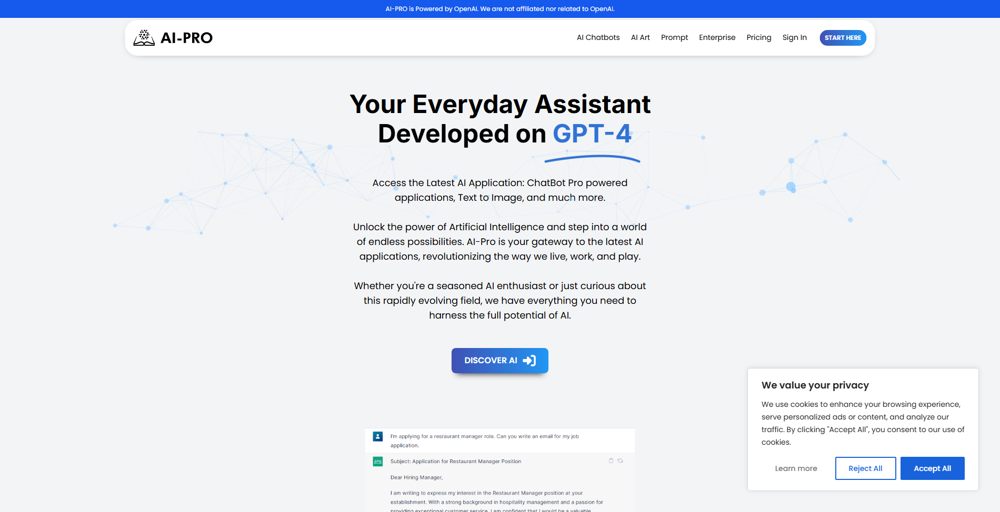
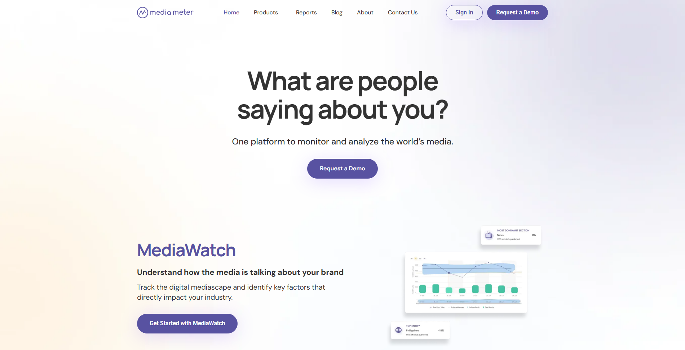
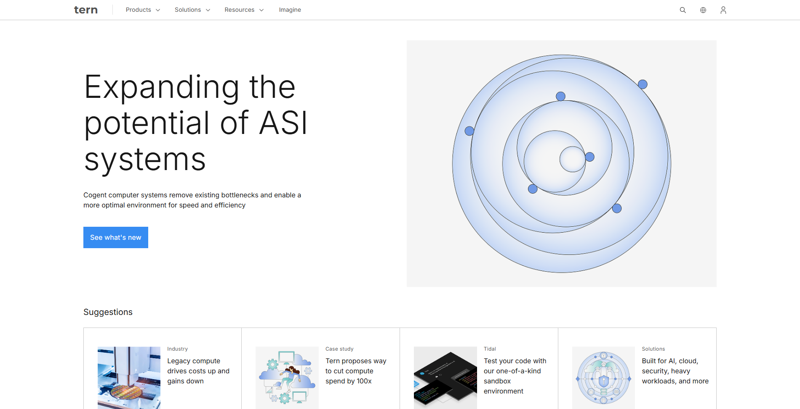
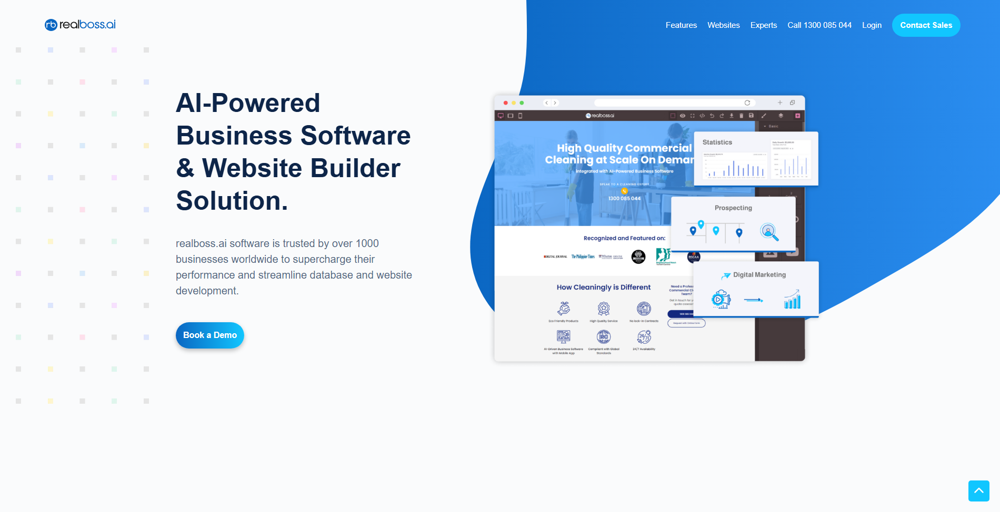
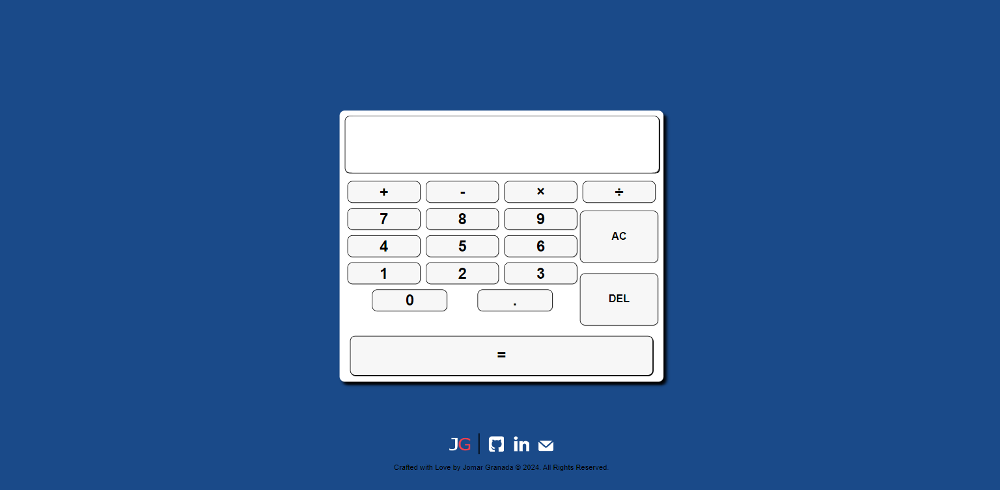
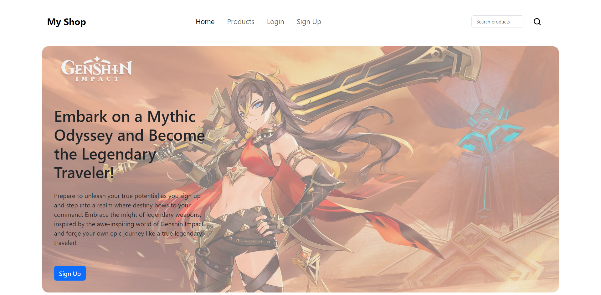
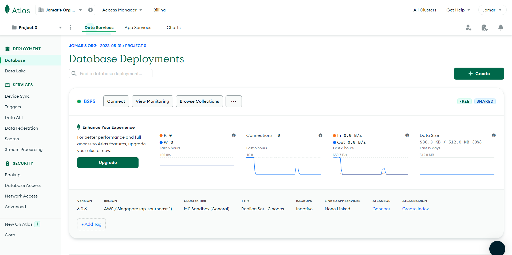
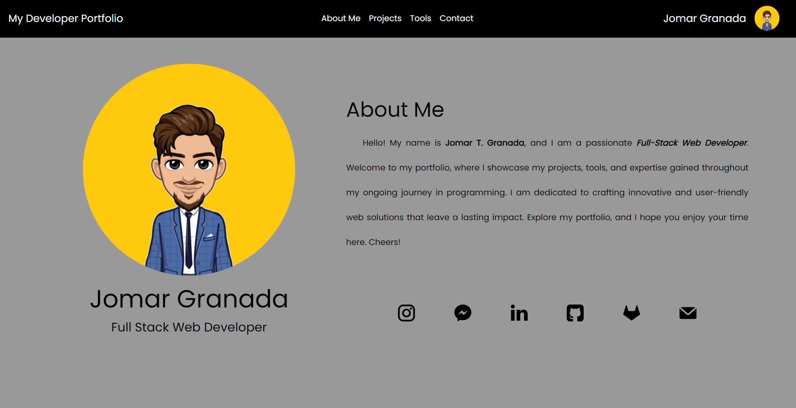

AI-PRO
React · TypeScript · Node.js · PHP (CodeIgniter) · Redis
Role: Employee — Full-Stack Engineer
Full-Stack Software Engineer
I am a certified Full-Stack Web Developer with three years of experience. Dedicated on crafting innovative and user-friendly web solutions. Welcome to my portfolio where you'll find my projects, tools, and expertise as I continue my programming journey.
Note: I worked on these projects as a member of the product teams (employee / contractor). I am not the project owner and do not claim ownership of product IP or customer data. The screenshots/links shown are public-facing assets only. These examples are included to demonstrate my ability to adapt to real product environments, collaborate with cross-functional teams, and deliver measurable results.

React · TypeScript · Node.js · PHP (CodeIgniter) · Redis
Role: Employee — Full-Stack Engineer

Python · PHP · MongoDB · ElasticSearch
Role: Employee — Backend Engineer

TypeScript · Node.js
Role: Contractor — Full-Stack Engineer

TypeScript · Material UI · Node.js · AWS S3/CloudFront
Role: Contractor — Full-Stack Engineer

Sveltekit Typescript

React MERN

MongoDB Postman ExpressJS Nodejs

HTML CSS Javascript

Restful APIs
PostmanTap a certificate to enlarge